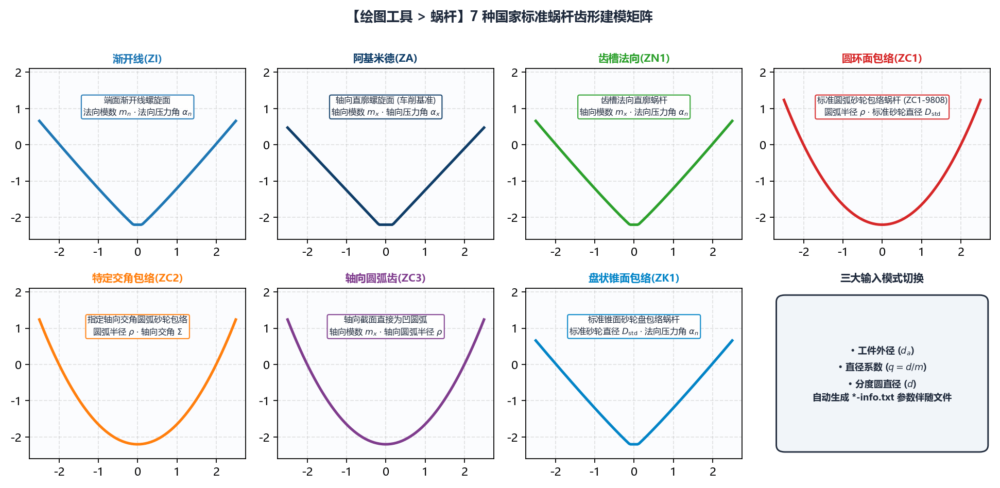

5.5 蜗杆：7 种标准蜗杆（ZI/ZA/ZN1/ZC1/ZC2/ZC3/ZK1）建模
绘图工具 -> 蜗杆 模块完整实现了符合 DIN 3975 与 GB/T 10085 标准的 5 大类共 7 种精密圆柱蜗杆端面齿形的高精度数学建模。
一、7 种圆柱蜗杆类型导航与成形机理全景表

在 绘图工具 -> 蜗杆 下，通过二级与三级子标签页可切换全部 7 种蜗杆模型：
| 二级标签页 | 三级标签页（如适用） | 国标代号 | 空间成形机理与专属特殊参数 |
|---|---|---|---|
渐开线(ZI) |
(直接显示) | ZI | 渐开线螺旋面蜗杆：端面截形为标准渐开线，法向基圆柱相切，适用于高精密分度蜗杆传动。 |
阿基米德(ZA) |
(直接显示) | ZA | 阿基米德螺旋面蜗杆：轴向（A-A）截面为直线齿廓，端面为阿基米德螺线；压力角直接定义为 轴向压力角 ()。 |
法向直廓(ZN) |
齿槽法向(ZN1) |
ZN1 | 齿槽法向直廓蜗杆：垂直于齿槽螺旋线的法向截面为直线齿廓，适合车削开粗与通用磨削。 |
圆弧圆柱(ZC) |
圆环面包络(ZC1) |
ZC1 | 圆环面砂轮包络圆弧蜗杆（如案例四 ZC1-9808）：由截面为凸圆弧的盘状砂轮按理论螺旋升角包络成形。专属参数：圆弧半径 () 与 标准砂轮直径 ()。 |
圆弧圆柱(ZC) |
特定交角包络(ZC2) |
ZC2 | 特定轴交角圆环面包络蜗杆：砂轮安装倾角不等于中径螺旋升角，而是按指定的 轴向交角 () 包络生成的圆弧蜗杆。专属参数：圆弧半径 () 与 轴向交角。 |
圆弧圆柱(ZC) |
轴向圆弧齿(ZC3) |
ZC3 | 轴向截面圆弧齿廓蜗杆：在轴向（A-A）剖面内齿廓直接为两段对称圆弧。专属参数：圆弧半径 () 与 轴向压力角。 |
锥面包络(ZK) |
盘状锥面包络(ZK1) |
ZK1 | 盘状锥面砂轮（或锥面铣刀）包络蜗杆：由直廓双锥面盘形砂轮包络而成的非线性空间螺旋面。专属参数：标准砂轮直径 ()。 |
二、三种 输入模式（切换蜗杆基准直径定义）
所有 7 种蜗杆面板顶部的第 1 行均为 输入模式 下拉框，支持适配不同国家的蜗杆图纸标注习惯：
工件外径 (da)（默认）：第 2 行显示蜗杆外径()，系统由外径、模数与齿顶高反推分度圆直径 与直径系数 ；直径系数 (q)：第 2 行显示蜗杆直径系数()，系统自动按 计算分度圆直径；分度圆直径 (d)：第 2 行直接显示分度圆直径()，适合直接标注节圆/分度圆直径的图纸。
三、通用参数与专属参数配置指南
| 参数名称 | 适用蜗杆类型 | 工程含义与配置说明 |
|---|---|---|
轴向模数 () |
全部 7 种 | 蜗杆轴向模数（，轴向齿距 ）。 |
头数 () |
全部 7 种 | 蜗杆头数（正整数，导程 ）。 |
圆弧半径 () |
仅 ZC1 / ZC2 / ZC3 |
圆弧圆柱蜗杆的母线圆弧半径（，例如 ZC1-9808 填 9.5）。 |
标准砂轮直径 () |
仅 ZC1 / ZK1 |
定义包络生成该 ZC1 或 ZK1 蜗杆标准齿面时的名义基准砂轮直径（，例如 ZC1-9808 填 350）。注意：当机床实际磨削砂轮磨损偏离 时，后续在 基本参数 中生成的修整程序会自动补偿因砂轮变小带来的包络差异！ |
轴向交角 |
仅 ZC2 |
成形砂轮主轴与蜗杆轴线的特定空间交角（∘^\circ∘）。 |
法向压力角 / 轴向压力角 |
全部 7 种 | ZA 与 ZC3 显示为 轴向压力角，其余 5 种显示为 法向压力角。右侧均配备 右: / 左: 两个 #6bb1aa 青绿色微调框，支持左右齿面压力角独立补偿。 |
变位系数 / 齿厚系数 |
全部 7 种 | 标准 变位系数 默认 0，齿厚系数 默认 0.5；右侧均配 #6bb1aa 微调框用于控制法向弦齿厚或三针测量值 。 |
齿高模式 & 齿高调节 |
全部 7 种 | 可选 设置直径（输入 齿顶圆直径 与 齿根圆直径）或 设置系数（输入 齿顶高系数 与 顶隙系数）。 |
修整延长 & 齿顶倒圆半径 |
全部 7 种 | 定义齿顶延伸高度与 右: / 左: 齿顶过渡圆角半径。 |
四、生成蜗杆 DXF 并衔接 基本参数 或 车刀计算
- 在对应蜗杆子标签页填妥参数并指定
保存文件路径后，点击左下角生成齿形文件； - 系统自动生成蜗杆端面齿槽曲线
<文件名>.dxf及<文件名>-info.txt（其中DXF 齿形类型自动标记为端面(左)）； - 后续两条工艺路线：
- 路线 A（精磨砂轮修整）：直接切换至
基本参数，加载该.dxf文件，软件自动回填分度圆中径、导程并将DXF 齿形类型设为端面(左)，一键生成多砂轮直径修整宏程序； - 路线 B（粗加工成形车刀设计）：先通过
工具箱 -> 曲线转换将该端面(左)曲线转换为法向标准齿形，再送入工具箱 -> 车刀计算生成粗车刀刃口 DXF（详见第 9 章 9.4 节ZC1-9808完整案例）。
- 路线 A（精磨砂轮修整）：直接切换至